2014/0427Sunローテンション女。 566回目
お久しぶりっ
最近は収録したり撮影したり
リハーサルしたりと忙しいです！
設楽さん、まあや
お誕生日おめでとうございます
乃木ここアップされとる！
楽天アンダーライブの密着だ。
自分が歌って踊ってるときの表情って
自分が思ってる以上に違うのね
踊ることはだいすきだけど
1曲目から汗だくなって
しまわないようにとか頭の中で
いろいろな調整をします。
まあ結局ライブの興奮の汗には
勝てないんだけど。
だから全然だめだった
なんか優しすぎるというか
小さいというか
だめだこりゃ
あー反省。
でも、お客さんの歓声を
アンコールを聞いて、
見てて泣きそうでした。
引き続き頑張ります。
3日アンダーライブお楽しみに！！
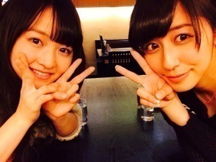
ちーちゃんとご飯行ったときっ
ご飯食べてるから全くしゃべらない。
2人でもぐもぐ食べてた。
ちーちゃんは冷静。
また行きたい
あああああ
プリンシパル...
稽古がはじまります！！
台本読んだけど
めちゃくちゃ面白いです。
こちらも頑張ります。
えへへへへへへ
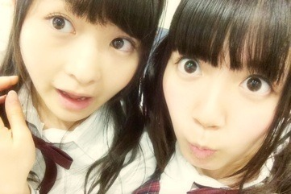
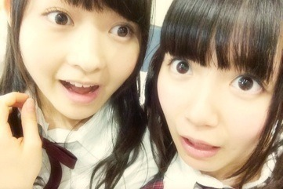
あ
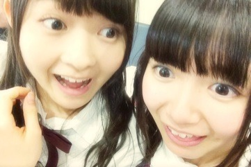
えへへへへへへへへへへへ
まりか
2014/0422Tue懐かれない。565回目
日曜日はパシフィコ横浜で
個別握手会でした〜！
2部 サイドお団子
3部 編み込みゆる巻
4部 三つ編み
5部 ポニーテール
アンダーライブのこと
プリンシパルのこと
表紙イラストのこと
他愛ない会話
楽しかった！！
まだまだ横アリについての
感想も多くて。
そこで踊ったまりっか'17を
見てから会いたくなった
という方がたくさん泣
横アリがきっかけでファンになった！
と言ってくださる方もたくさんで
本当に嬉しい。
私服はこれだ！！！
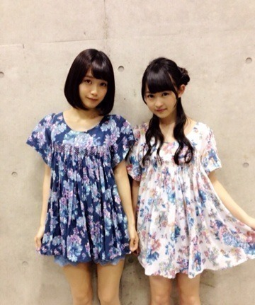
でん
チュニック色違いを
まいまいが全握で着てたのに気づいて、
合わせて個握で着ようって計画したの。
この花柄可愛んだ〜
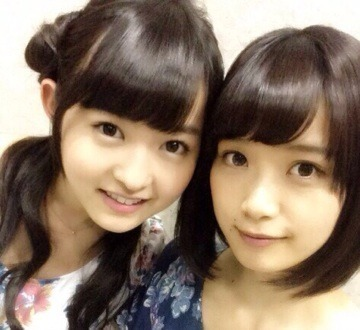
にやにや
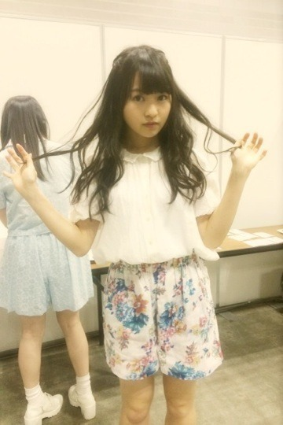
実はセットアップで
同じ柄のショーパンもあるっ
なかなか好評だった！
デート服っぽいよね。
春夏いっぱい着よう...
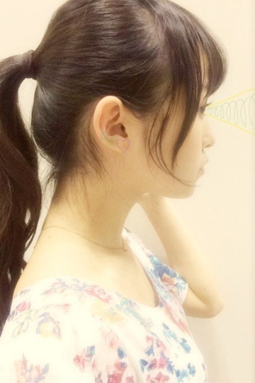
かわいいイヤリング欲しい。
この前かわいいパーツ買ったんだけど
どうやってイヤリングにしたら
良いか考え中です。
まりか
2014/0417Thu眼球磨き。564回目
氣志團現象2014
『極東ロックンロール・ハイスクール 第弍章』#34 乃木坂46 vs 氣志團 〜学生服反逆同盟〜ライブ！
はああああ
すごーく楽しかった！
生バンドってほんとにかっこいい。
リハーサルで氣志團さんが
演奏してるときは鳥肌ものでした。
なにより、音が出ないギター
歌ってくださって...
本当に嬉しかった！
乃木團のみんなの
One Night Carnivalも
本当にかっこよかった！
リハから見てたけど
みんなのファンになった笑
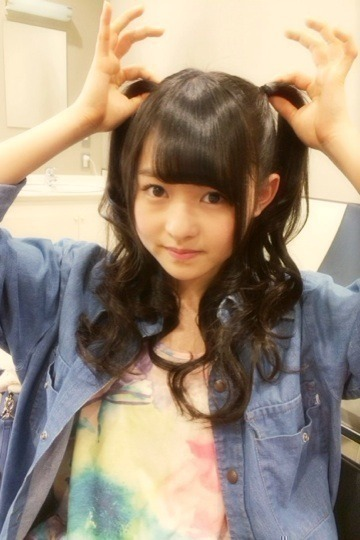
生まれたままでも
披露することができて
嬉しかったなあ。
他にガルル、おいシャン歌った！
ちょっと髪型で目立とうと思って
ハーフツインにした。
ごめんなさい笑
みんなも書いてるように、
楽屋前がすごいことになってて。
ポップコーン、わたあめ、
ソフトクリームの機械
フルーツにミキサー
がだだだって並んでて...
メンバーみんな興奮してた笑
私も早速まいまいと
ベリーとヨーグルトと牛乳入れて
スムージー作って飲みました...
わざわざファミコン
持ってきてくださって
楽屋のテレビに取り付けてくださって
おもちゃもたくさん。
氣志團万博のときから
優しくしていただいて...
MCも面白くて、
演奏するとかっこ良くて
もう神様のような方々です...
ひたすら感動していました。
俺んとこ来ないか？
と言われたら、
ついて行きます！！！！！！！！
って叫ぶよ
叫んだよ！
またぜひ呼んでいただきたいです！
ありがとうございました！！
KISSESのみなさん、
乃木ファミリーのみなさん、
ありがとうございましたっ！
これからも乃木坂46を
夜露死苦うううぅぅぅう！！
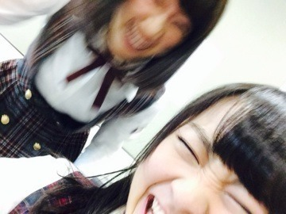
楽屋でうるさかったらりと
まりか
2014/0414Mon究め極める。563回目
昨日は幕張メッセで全国握手会！
ミニライブのステージから
見たらお客さんぎゅーぎゅー！
全握でおそらくいちばん
なのではないかと思うくらい
大きな歓声に包まれて幸せでした...
松井玲奈さん
これからよろしくお願いします！
握手は15レーンで飛鳥とっ
実は写真撮り忘れてて泣
アンダーライブ終わった後
あ！撮ってないね！って
話したんだけど
2人とも泣いて顔がボロボロだった
から撮らなかったよ〜
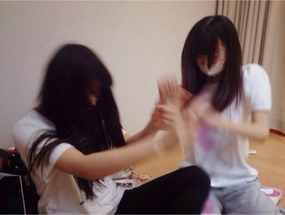
じゃれ合ってる写真でも貼ろう
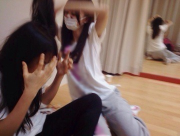
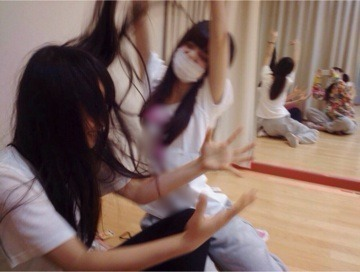
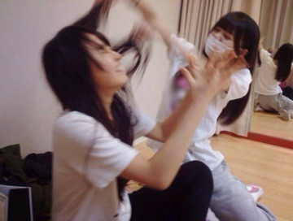
握手もこんな感じで
わちゃわちゃしてた
飛鳥かわいい
列が出来てて嬉しかったな〜
そして、握手会終わりの
楽天カード×乃木坂46アンダーライブ
狼に口笛を
左胸の勇気
ぐるぐるカーテン
-MC-
涙がまだ悲しみだった頃
春のメロディー
初恋の人を今でも
-MC-
13日の金曜日
扇風機
-MC-
生まれたままで
気づいたら片想い
-アンコール-
左胸の勇気
ぐるぐるカーテン
特別なものにしたいと思って
メンバーみんなでセットリストを
考えました！
来てくださったみなさん
ありがとうございました。
アンコールくると思ってなかった泣
今までのライブは
前にいるメンバーがいて
そのうしろにひっついて
やってきたけど、
今回はアンダーだけのライブ。
前に立つ重圧感を
昨日のライブで初めて知りました。
前に立つメンバーの気持ちが
全部わかったとか
そういうわけじゃない。
規模も違うけど、
少し知ることができた。
自分なりの輝き方を
見つけたいと思ったし、
まだまだだなと思った。
楽しかった、
の一言で終わらなくて良かった。
楽天さん、
本当にありがとうございました！！
スタッフのみなさん
ありがとうございました。
セットリストを変えたいという
わがままを聞いてくださって
ありがとうございました！
5月のライブも頑張ろう。
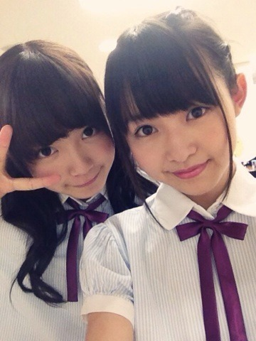
ひめか18歳おめでとう♪
なかいさん学年違うけど、
私早生まれだからほぼ同い年。
まりか〜ってとたとた駆け寄って
くるときキュンキュンするぅう
ところでこの写真3rdの頃よ〜
懐かしい。
☆お知らせ
8thの特典映像「乃木坂の4人」
監督の熊坂出さんのweb小説の
表紙イラストを担当しました。
ドキュメンタリー撮ってるとき
監督にブログに載せてる絵を
ほめてもらったことがありましたが、
こういう形でお仕事をご一緒できる
と思ってなかったので、
すごく嬉しかったです！
実はずっと絵のお仕事してみたい
と思ってました...
条件は特になく
どんな形でもいい
と言ってくださったので
恐縮ですが好きなように
描かせていただきました！
小説を読んで、
自分の中で感じたイメージを
絵で表現しました。
独特な文章に惹き込まれます。
あー素敵だ...
どう表現したらよいのか...
でも好き！素敵！って笑
web小説は明日からの公開になるので
ぜひ見て、読んでください！
明日は氣志團ライブです！！
楽しんでくるぞ〜
まりか
2014/0411Fri晴れやか孤独。562回目
や！！！！！！！！！
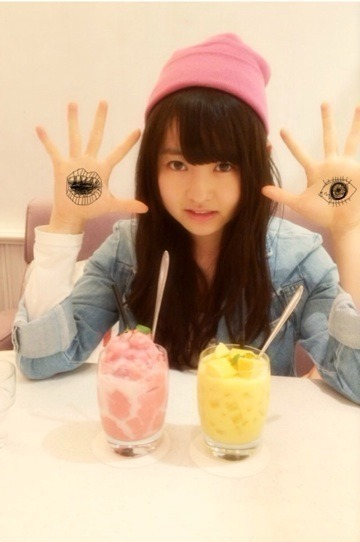
ストロベリースムージーと
マンゴー杏仁！！！！
お母さんと買い物したっっ
勉強になるし参考になるんだ〜
最近はライブのリハなど
忙しくしています〜
アンダーライブ、
まだ余裕があるみたいです><
初の試みであるライブなので
どうなるかわからないのですが、
価値があるライブにしていきたい
と思ってます！
握手会やコメントで
どうせ当たらないと躊躇している方も
たくさんいらしたので。
この機会に応募してくださると
嬉しいです^^
応募してくださった方々の分
良いライブにしたい！
公式サイトに
市來玲奈、伊藤寧々、伊藤万理華、井上小百合（B、C、Dコースは欠席、Eコースのみ参加）
こう書いてあるから
わかりにくいけど、4人とも
欠席ではなく小百合が舞台の為
カッコ内の日が欠席になります。
握手会やコメントで
渋谷は参加しないの？
と何度も聞かれたのですが><
れなりんもねねも私も
全部参加します！！！
2次募集が始まりました。
2014年5月3日
Bコース:開場 11:00 開演12:00
Cコース:開場 14:00 開演15:00
Dコース:開場 17:00 開演18:00
会場 渋谷TSUTAYA O-EAST
1コースごとに
応募券3枚必要になります。
その分全国握手会に
行けなくなりますが、
ぜひともよろしくお願いします。
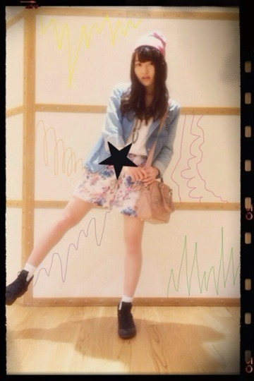
きのうの私服だよ〜
ビーニー帽 BEAMSBOY
デニムジャケット GRACE
花柄パンツ Kastane
スニーカー コンバース
ジャケットはお母さんのお下がり。
ジャックルコーのピンクの鞄は
お母さんの...。憧れの鞄です。
こないだの握手会で
私服載せてほしいという
リクエストが多くて嬉しかったー
女の子も男の子も...
みなさんありがとうございます。
だから早速載せる。
単純。
また載せます！！
告知
MC(ミューズクリップ)に
載っているのでぜひ見てね！
フリーペーパーです！
この前月刊エンタメさんの
撮影がありました〜
なんと未央奈とペアグラビアでした！
予想外なペアだと思いますが
楽しみにしていてください！
4月30日発売なので
チェックよろしくお願いしまっっ
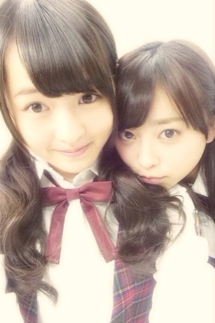
久しぶりに伊藤ちゃんず♪
今日のMステは
眼球見開いて見るべし！！！！！！！
まりか